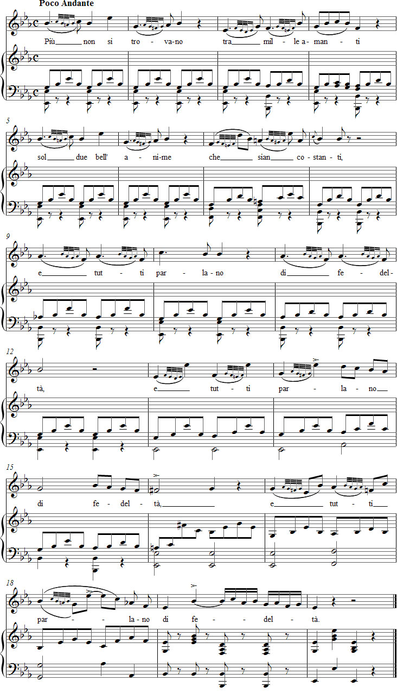

← Takaisin etusivulle
Vaccaj – Harjoitus 10b
Valitse ääniala:
Mezzosopraano
Tenori
Kuuntele äänite
Selaimesi ei tue äänisoitinta.
Nuotit

Tehtävä 10b
[il grup'petto]
Il gruppetto
Kaksoishele
['pju non si 'trovano]
Più non si trovano
Enää ei löydy
[tra 'mille a'manti]
tra mille amanti
joukosta tuhannen rakastavaisen
[sol 'due bɛll 'anime]
sol due bell' anime
ainoatakaan kahta jaloa sielua,
[ke 'sian kos'tanti]
che sian costanti,
jotka olisivat pysyviä
[e 'tutti 'parlano]
e tutti parlano
ja kaikki puhuvat
[di fedel'ta]
di fedeltà.
uskollisuudesta.
Enää ei löydy tuhannen rakastavaisen joukosta
kahta jaloa sielua, jotka ovat uskollisia toisilleen
– ja kaikki puhuvat uskollisuudesta.